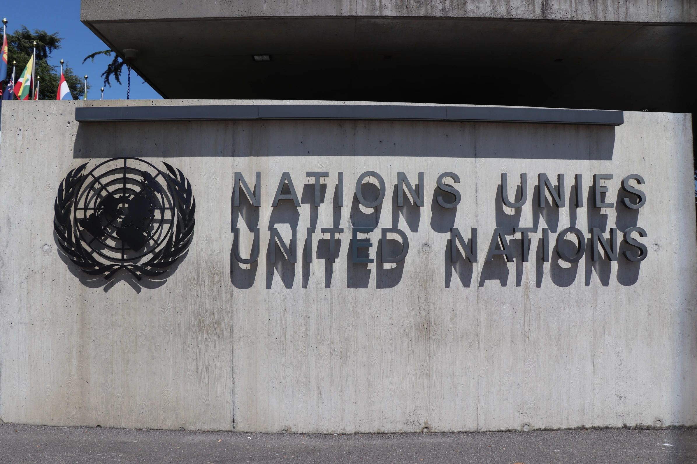
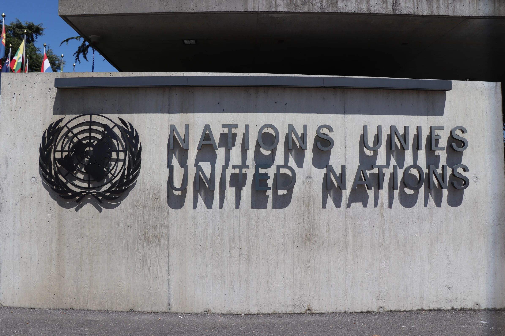
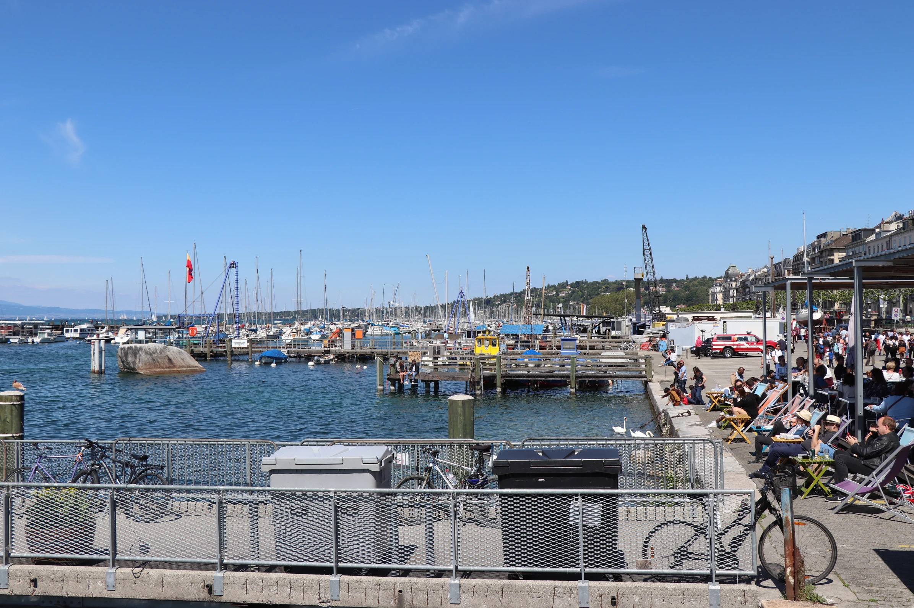

First week in Canada, mild winter.
One day trip to Geneva

Hari itu tanggal 4 Juli 2019, aku bangun pukul 05.00, waktu yang cukup pagi (di Prancis) untuk memulai aktivitas. Bus yang akan aku tumpangi sebenarnya baru akan berangkat dalam 1 jam 30 menit. Apartemenku pun hanya berjarak 10 menit dari stasiun bus, jalan kaki. Tapi lebih baik bangun pagi toh? agar tidak terlalu tergesa-gesa, apalagi sampai ketinggalan bus.
Cindy, teman satu apartemenku, nampaknya sudah bersiap-siap sedari tadi. Aku bergegas mandi, meski mata masih sepet karena semalam tidur sangat larut (seperti biasanya), kuguyur tubuhku dengan air hangat. Lalu kukenakan baju seadanya, jeans plus kaos oblong dan jaket. Berbagai barang yang hendak kubawa hari itu sudah kupersiapkan sejak semalam. Botol minum, lunch, beberapa dokumen penting seperti pasport dan titre de séjour (sejenis KTP di Perancis). Tak lupa pada pepatah "sedia payung sebelum hujan", sudah kumasukkan pula sebuah payung kecil ke dalam ranselku.
Perjalanan itu sudah kami rencanakan sekitar sebulan sebelumnya. Cindy baru diterima kerja, dan kalau tidak salah hari itu adalah weekend terakhir sebelum dia mulai sibuk untuk pekerjaannya. Jadi kami pun memutuskan untuk ke Jenewa, karena cukup dekat dari Lyon, dan transportasinya pun mudah dan terjangkau. Naik bus dan beruntung kami dapat tiket sekitar 15€ pp. Waktu sudah menunjukkan pukul 05.45. I'm ready to go, tapi Cindy masih bersiap-siap. Sepuluh menit kemudian kami berangkat menuju stasiun Perrache.
Sekitar pukul 06.00 menit kami sudah bersiap di ruang tunggu. Biasanya kita harus sudah ada di stasiun setidaknya 15 menit sebelum keberangkatan. Kulihat jam di ponselku sudah menunjukkan pukul 06.25. Tapi bus kami belum nampak juga. Gelisah, tentu saja. Takut kalau kami salah halte. Di halte itu ada beberapa orang yang nampak gelisah juga. Kutanya beberapa dari mereka, ternyata banyak yang satu keberangkatan dengan kami.
Waktu sudah menunjukkan pukul 06.45, sudah lewat 20 menit dari jadwal, tapi bus yang akan kami tumpangi belum datang juga. Aku sedikit menyesal mengapa tadi tidak menyempatkan diri untuk ber*k. 😂
Sebuah bus dari perusahaan yang sama datang- btw nama busnya "Ouibus". Aku merasa lega, sampai akhirnya kulihat kode busnya bukan tujuan Jenewa. Parahnya kondektur busnya juga tidak tahu mengapa bus kami terlambat. Jadi meskipun satu perusahaan, sistemnya tidak terintegrasi sepenuhnya. Tapi supir yang baik hati memberi kami nomor kontak yang bisa dihubungi. Berdasarkan informasi, bus kami masih dalam perjalanan, macet, dan akan sampai sebentar lagi. Benar saja, sekitar pukul 07.15 bus itu datang, dan 10 menit kemudian kami berangkat. Yayy !!!
Menurutku hal ini cukup mengecewakan. Biasanya, jika ada keterlambatan seperti ini, pihak perusahaan atau kondekturnya akan mengirimkan konfirmasi melalui email atau SMS. Bagaimana kalau calon penumpang mengira bahwa busnya tidak datang, kemudian meninggalkan stasiun. Keterlambatan selama hampir satu jam itu abnormal, kacau!
But that's okay. Now let's go back to the trip...
Perjalanan ke Jenewa anteng-anteng saja. Jalanan lancar dan aku bisa tidur nyenyak. Untuk memasuki wilayah Swiss, ada dua kali pengecekan dokumen, masing-masing dari autorisasi perbatasan Perancis dan Swiss. Sekedar informasi, Swiss tidak termasuk ke dalam Uni Eropa. Jadi tak sebagaimana halnya kebanyakan negara di Eropa barat, untuk memasuki Swiss kita perlu membawa dokumen perjalanan lengkap, seperti pasport dan surat izin tinggal.
Sekitar pukul 09.45 kami tiba di Jenewa. Kami pun langsung meluncur ke arah danau. Untuk menghemat penggunaan data internet, kami telah mengunduh offline map kota Jenewa. Tempat pertama yang kami tuju adalah pinggir danau, untuk menikmati sarapan. Sebuah croissant yang kami beli di Lyon. Usai sarapan, kami mendekat ke area danau untuk bisa bersantai sejenak menikmati mentari pagi. Kotanya sangat bersih, dan area publik ditata dengan begitu apik. Ini jauh lebih bersih dan rapi jika dibandingkan dengan kota Lyon. Dua jempol untuk pemerintah kotanya.

Kota Jenewa menduduki salah satu peringkat tertinggi untuk kota wisata di Eropa. Kota Jenewa memiliki fasilitas wisata yang cukup lengkap. Keindahan alamnya didukung oleh moda transportasi massal dengan pelayanan yang cukup baik. Di banyak titik di tengah kota, juga banyak kami temui tempat isi ulang air minum. Di berbagai kota di Eropa, kita memang bisa meminum langsung air dari keran, tanpa harus memasaknya dulu, karena sistem sanitasi yang sudah sangat bagus. Terlebih lagi di negara Swiss, yang dikenal dengan pegunungannya. Hal ini menyebabkan airnya terasa begitu segar. Pemuas dahaga yang sempurna di kala mentari mulai terik.
Pagi itu kami habiskan dengan menyusuri danau. Menjelang siang, kami duduk-duduk di pinggiran danau sambil menikmati lunchbox yang sudah kami persiapkan dari rumah. Menikmati menu sederhana berupa salad sambil menyaksikan keindahan sungai ditemani para bebek yang berenang di sekitaran danau ternyata menyenangkan juga. Sungguh kenikmatan yang hakiki.List kunjungan kami hari itu tidak banyak, hanya ke gedung United Nation dan ke Jet d'Eau. Sasaran objek foto pertama kami tentu saja adalah "Jet d'Eau" atau dalam bahasa Inggris disebut the Geneve water fountain, yang merupakan landmark kota Jenewa. Jet d'Eau terletak di sisi danau yang satunya.
Mencapai ketinggian 140 meter, Jet d'Eau telah lama menjadi landmark kota Jenewa. Kisah indah Jet d'Eau yang terkenal di Jenewa hampir tidak disengaja. Pada tahun 1886, pabrik hidrolik yang mendistribusikan tenaga penggerak Rhône kepada pengrajin dan pembuat jam tangan Jenewa diwajibkan untuk membuat evakuasi terbuka air dengan tekanan berlebih, ketika bengkel ditutup pada malam hari. Tempat itu memicu antusiasme dan kegembiraan sehingga terciptalah Jet d'Eau lahir.
Selepas makan siang, kami beranjak menuju gedung United sekitaNation. Gedung ini terletak cukup jauh dari area Jet d'Eau, kurang lebih 4km. Kita bisa kesana dengan menaiki tram. Namun karena kami ingin menyusuri ruang-ruang di kota, kami memutuskan untuk berjalan kaki. Saat itu kebetulan sedang musim semi. Udara sejuk terasa di sepanjang jalanan kota. Dengan jalanan yang bersih dan suasana yang tenang, Jenewa menyajikan suasana khas kota kecil Eropa. Terkait dengan bahasa, warga Jenewa kebanyakan menggunakan bahasa Prancis sebagai bahasa pengantar untuk percakapan sehari-hari. Namun untuk berbagai kegiatan formal dan layanan publik, banyak juga yang bisa berbahasa Inggris. Jadi tidak perlu khawatir jika kita hanya menguasai bahasa Inggris, bahkan jika bahasa Inggris kita pasif sekalipun. Sekitar satu setengah jam perjalanan (karena foto sana dan foto sini), akhirnya kami tiba di gedung United Nation (Perserikatan Bangsa-Bangsa), yang terletak di Palais des Nations. Disana telah ramai oleh wisatawan yang memiliki tujuan yang sama dengan kami: berfoto di depan gedung PBB. Swiss memang dikenal sebagai negara yang paling damai dan netral di dunia. Maka tak heran jika kota Jenewa dipilih untuk menjadi tuan rumah berbagai kantor pusat organisasi internasional, seperti Organisasi Perdagangan Dunia, Organisasi Kesehatan Dunia (WHO), serta markas PBB (United National) dan Bank Dunia.Kantor PBB di Jenewa adalah markas PBB terbesar kedua setelah New York. Gedung ini berlokasi di Palais des Nations yang awalnya dibangun untuk Liga Bangsa-Bangsa antara 1929 dan 1938 dan kemudian diperluas pada awal 1950-an dan akhir 1960-an. Beberapa organisasi dunia seperti Konferensi PBB tentang Perdagangan dan Pembangunan (UNCTAD), Kantor PBB untuk Koordinasi Urusan Kemanusiaan (OCHA) dan Komisi Ekonomi PBB untuk Eropa (ECE) berkantor di gedung ini.
Di depan gedung PBB terdapat area yang cukup luas dengan air mancurnya yang indah. Tepat di seberang gedung PBB, terdapat sebuah monumen unik berupa sebuah kursi raksasa setinggi 12 meter dengan salah satu kakinya yang patah, sebagaimana mereka menyebutnya, yakni "Broken Chair". Broken Chair adalah patung monumental dari kayu karya seniman Swiss Daniel Berset, yang dibangun oleh tukang kayu Louis Genève. Monumen ini melambangkan untuk mendukung penandatanganan perjanjian internasional tentang pelarangan ranjau darat pada masa Perang Dunia I dan II yang memakan banyak korban. Tepat di halaman depan tampak bendera-bendera negara anggota PBB, salah satunya Indonesia. Sebenarnya para pengunjung dapat mengikuti tour resmi oleh pengelola United Nation jika ingin berkeliling di sekitar gedung. Namun karena perjalanan kami hari itu sangat minim persiapan, berkeliling di dalam gedung PBB tidak masuk to do list kami. Well, sebenarnya pada saat itu kami juga tidak mengetahui tentang adanya tour ini. Berdasarkan informasi yang aku baca, pengunjung dapat membeli tiket seharga 12 CHF atau sekitar Rp. 160.000,00 untuk dapat mengikuti tour, yang diselenggarakan dua kali dalam sehari, yakni pukul 10-12 siang dan pukul 14-16 sore. Nantinya pengungung akan diajak berkeliling gedung, melihat-lihat ruang konferensi internasional yang besar dan megah. Namun tidak usah bersedih jika tidak dapat masuk karena harga tiket yang lumayan menguras kocek. Pemandangan dari luarnya pun sudah sangat megah dan bagus untuk objek foto.
Puas berkeliling di sekitar Palais des Nations, kami beranjak kembali ke area Jet d'Eau. Di tengah perjalanan, kami menyempatkan diri untuk mampir ke toko souvenir. Ada berbagai macam cindera mata yang dapat dijadikan oleh-oleh dari Jenewa. Selain berbagai macam hiasan kulkas dan gantungan kunci, kita bisa juga membeli berbagai barang khas negara Swiss, seperti tas, jam tangan, atau pisau keramik. Soal harga, sangat relatif. Jika kita pandai dalam memilih toko dan barang yang discount, kita bisa mendapatkan barang dengan kualitas bagus dengan harga yang masih ramah di kantong.
Tepat di halaman depan tampak bendera-bendera negara anggota PBB, salah satunya Indonesia. Sebenarnya para pengunjung dapat mengikuti tour resmi oleh pengelola United Nation jika ingin berkeliling di sekitar gedung. Namun karena perjalanan kami hari itu sangat minim persiapan, berkeliling di dalam gedung PBB tidak masuk to do list kami. Well, sebenarnya pada saat itu kami juga tidak mengetahui tentang adanya tour ini. Berdasarkan informasi yang aku baca, pengunjung dapat membeli tiket seharga 12 CHF atau sekitar Rp. 160.000,00 untuk dapat mengikuti tour, yang diselenggarakan dua kali dalam sehari, yakni pukul 10-12 siang dan pukul 14-16 sore. Nantinya pengungung akan diajak berkeliling gedung, melihat-lihat ruang konferensi internasional yang besar dan megah. Namun tidak usah bersedih jika tidak dapat masuk karena harga tiket yang lumayan menguras kocek. Pemandangan dari luarnya pun sudah sangat megah dan bagus untuk objek foto.
Puas berkeliling di sekitar Palais des Nations, kami beranjak kembali ke area Jet d'Eau. Di tengah perjalanan, kami menyempatkan diri untuk mampir ke toko souvenir. Ada berbagai macam cindera mata yang dapat dijadikan oleh-oleh dari Jenewa. Selain berbagai macam hiasan kulkas dan gantungan kunci, kita bisa juga membeli berbagai barang khas negara Swiss, seperti tas, jam tangan, atau pisau keramik. Soal harga, sangat relatif. Jika kita pandai dalam memilih toko dan barang yang discount, kita bisa mendapatkan barang dengan kualitas bagus dengan harga yang masih ramah di kantong.
Swiss memang terkenal dengan brand jam tangannya, namun yang aku perhatikan, harganya masih cukup mahal untuk ukuran kantong mahasiswa. Jadilah kami hanya membeli beberapa hiasan kulkas dan sebuah mobil-mobilan dengan warna merah bercorak putih (seperti bendera Swiss). Dalam perjalanan, kami juga sempat mampir ke toko cokelat. Berbagai macam cokelat khas Switzerland tersedia, dengan beraneka bentuk dan rasa. Kita juga bisa mencicipi cokelat, namun jangan terlalu banyak ya, kan malu-maluin kalau cuma icip-icip tapi tidak membelinya. 😉️
Sekitar pukul 15.30 kami tiba di area Jet d'Eau. Betapa kagetnya kami mendapati water jet yang menghilang bagai di telan bumi. Kami coba mencari-cari dimanakah gerangan sang Jet d'Eau berada? Hancur hati adinda kaka... mengetahui ternyata Jet d'Eau sudah dimatikan. Kalau tidak salah, saat itu memang Jet d'Eau tidak dinyalakan sepanjang hari, hanya dibuka pada jam-jam tertentu. Jadilah kami menyesali diri, kenapa kami tidak kesana di pagi hari. Betapa sedihnya... 😓️Sore itu pun kami habiskan dengan berkeliling menyusuri sudut lain kota Jenewa. Sebenarnya kami ingin mencoba Switzerland cheese fondue, keju khas Swiss. Makanan ini berupa hidangan keju meleleh Swis yang disajikan dalam pot (caquelon) atau fondue pot di atas tungku portabel (réchaud) yang dipanaskan dengan lilin, dan dimakan dengan mencelupkan roti ke dalam keju menggunakan garpu bertangkai panjang. Kata orang kejunya sangat enak, tapi harganya cukup mahal, yakni sekitar 30 CHF per orang. Namun karena tidak menemukan restoran yang tepat, terpaksa niat itu kami urungkan. Semoga lain kali bisa mencicipinya.
Kami juga menyempatkan diri untuk mengunjungi Geneva Flower Clock, atau dalam bahasa Prancis disebut dengan "l'Horloge Fleurie". Jam ini dibuat pada tahun 1955 sebagai simbol pembuat jam kota, dan dedikasi terhadap alam.
Puas berkeliling, kami kembali ke area Jet d'Eau. Area ini sangat ramai oleh orang-orang yang bersantai menikmati keindahan danau, ditemani segelas bir atau wine. Disana juga banyak penjual souvenir. Kita bisa duduk-duduk santai, atau tiduran cantik menyaksikan indahnya musim semi, bersama dengan angsa-angsa yang bermain di pinggiran danau. Sekian cerita perjalanan kami ke kota Jenewa. One day trip yang begitu berkesan, dan akan selalu tersimpan dalam ingatan. Indahnya perjalanan kali ini kami lengkapi dengan kelezatan ice cream pistachio yang menggoyang lidah ini. Merci Cindy atas keceriaan yang kita bagi hari itu...